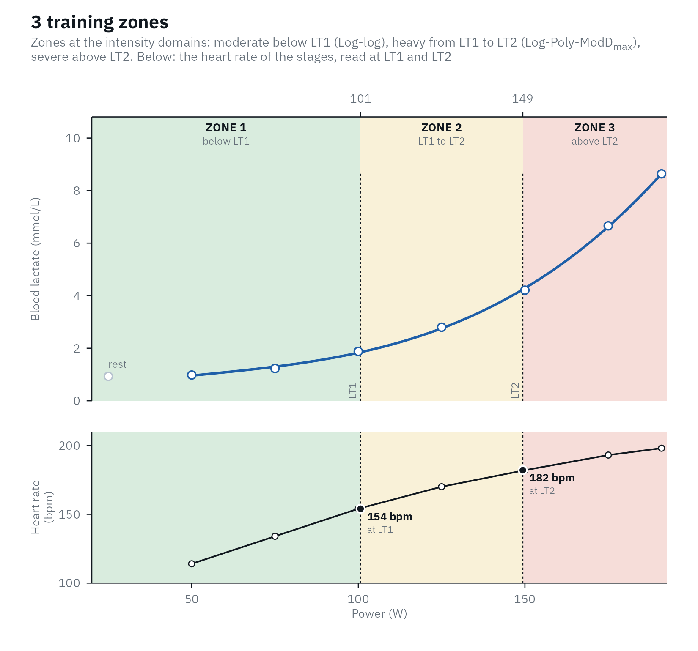
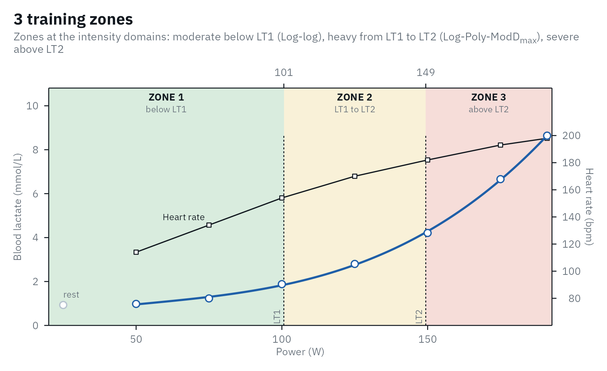
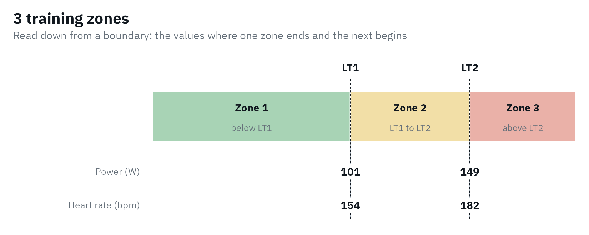
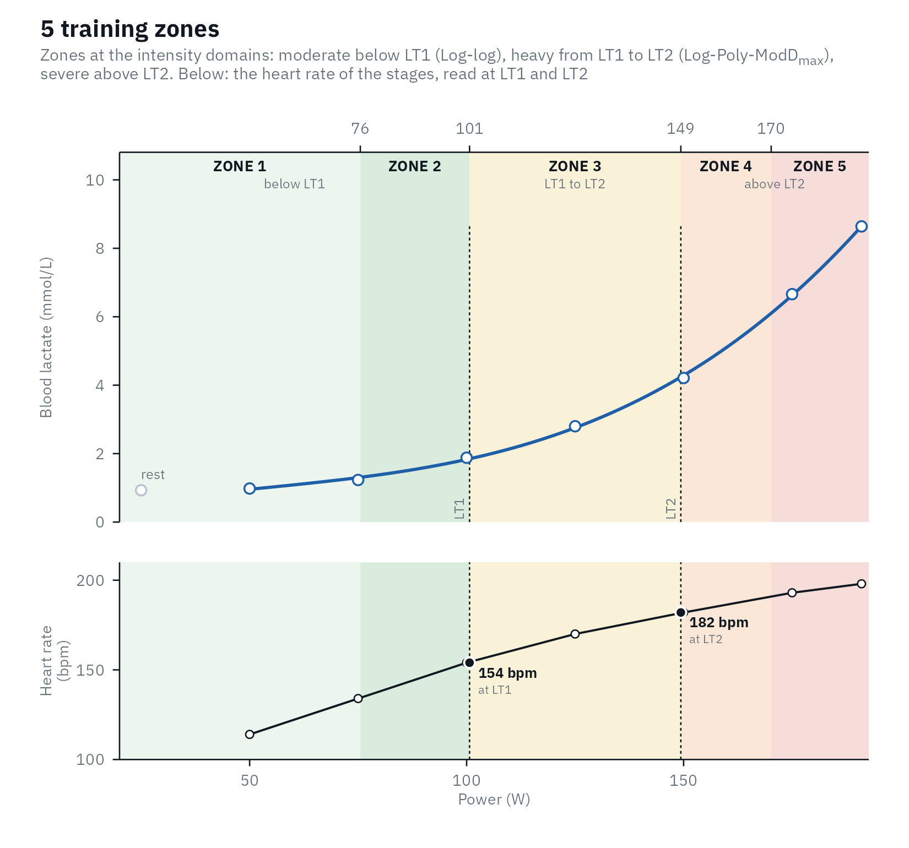

Two thresholds split the intensities of an athlete into three domains, each with its own physiology (Jamnick et al., 2020; Hofmann & Tschakert, 2017):
- Moderate, below the first threshold (LT1): lactate stays near resting values.
- Heavy, from LT1 to the second threshold (LT2): lactate is higher but can still reach a steady state.
- Severe, above LT2: lactate finds no steady state and keeps rising until the athlete stops.
LT2 methods aim at the maximal lactate steady state (MLSS). Some physiologists put the heavy/severe boundary at the critical power instead, which in a meta-analysis sat 12 W above the MLSS on average, with 95% limits of agreement from -19 to 44 W (Jones et al., 2019; Micheli et al., 2025), so treat the top of the heavy domain as approximate.
lactate_zones() places the zone boundaries at these
domain boundaries, so every zone belongs to one domain, and colors the
zones by domain: green for moderate, yellow for heavy, red for
severe.
Zones anchored to the athlete’s own thresholds hold up better than fixed percentages of a maximum. In 100 adults the lactate threshold fell anywhere between 45 and 74% of V̇O2max and the MLSS between 69 and 96%, so the same percentage put different people in different domains (Iannetta et al., 2020). Across 42 training studies in healthy, mostly sedentary or untrained adults, training set from thresholds raised V̇O2max more than training set from percentages of a maximum: 4.1 against 1.8 mL/kg/min in the studies with a control group (Meyler et al., 2025).
Choose LT1 and LT2
You decide which thresholds mark LT1 and LT2, and the choice matters. A review of the methods found that LT1 has some evidence for separating the moderate and heavy domains, with Log-log and Bsln+ 0.5 among the most defensible, and that few methods have evidence for separating the heavy and severe domains: Bsln+ 1.5 estimated the maximal lactate steady state in two studies with 3-min stages, and Log-Poly-ModDmax in one study with 4-min stages (Jamnick et al., 2020; Jamnick et al., 2018). With 3-min stages in elite cyclists, Dmax and the Stegmann IAT were within 5 W of the MLSS, while ModDmax and OBLA 4.0 overestimated it by 32 and 43 W (Płoszczyca et al., 2020); with 4-min stages in men of mixed fitness, the IAT of lactater was 37 W below it (Hauser et al., 2014).
If you do not choose, lactater uses Bsln + 0.5 for LT1 and
Log-Poly-ModDmax for LT2. Both have support in the studies
above, and both depend little on any single stage: leaving out one stage
at a time on the cycling tests of lactate_tests moved Bsln
+ 0.5 by a median of 1.7% and Log-Poly-ModDmax by 8.6%,
against 23% for LTP1, whose three straight segments have few stages to
spare in a test of 6 to 10 stages. The weak point of Bsln + 0.5 is that
it rests on a single baseline sample; the leave-one-out grid of
lactate_diagnostics() shows how much.
library(lactater)
library(dplyr)
results <- demo_data |>
lactate_threshold(intensity, lactate, heart_rate, plot = FALSE)
## the heavy domain (zone 2) for four pairs of LT1 and LT2
tribble(
~lt1, ~lt2,
"LTP1", "LTP2",
"Log-log", "Log-Poly-ModDmax",
"Bsln + 0.5", "Bsln + 1.5",
"OBLA 2.0", "OBLA 4.0"
) |>
mutate(heavy = purrr::map2(lt1, lt2, \(a, b) {
lactate_zones(results, lt1 = a, lt2 = b) |>
slice(2) |>
select(heavy_from = intensity_from, heavy_to = intensity_to)
})) |>
tidyr::unnest(heavy)
#> # A tibble: 4 × 4
#> lt1 lt2 heavy_from heavy_to
#> <chr> <chr> <dbl> <dbl>
#> 1 LTP1 LTP2 111 160
#> 2 Log-log Log-Poly-ModDmax 101 149
#> 3 Bsln + 0.5 Bsln + 1.5 83 118
#> 4 OBLA 2.0 OBLA 4.0 106 146On the same test, the heavy domain starts anywhere from 83 to 111 W and ends anywhere from 118 to 160 W, depending on the pair. Report the pair you used, and keep it between tests of the same athlete.
Three zones
Zone 1 is the moderate domain, zone 2 the heavy domain, and zone 3 the severe domain, as in the three-zone model of Hofmann & Tschakert (2017):
zones <- lactate_zones(results, lt1 = "Log-log", lt2 = "Log-Poly-ModDmax")
zones
#> # A tibble: 3 × 9
#> zone domain description intensity_from intensity_to lactate_from lactate_to
#> <chr> <chr> <chr> <dbl> <dbl> <dbl> <dbl>
#> 1 Zone 1 modera… below LT1 NA 101 NA 1.8
#> 2 Zone 2 heavy LT1 to LT2 101 149 1.8 4.2
#> 3 Zone 3 severe above LT2 149 NA 4.2 NA
#> # ℹ 2 more variables: heart_rate_from <dbl>, heart_rate_to <dbl>
autoplot(zones)
Each zone comes with its intensity, the lactate on the fitted curve, and, when given, the heart rate and RPE. Heart rate and RPE at a boundary are interpolated between the stages, and extrapolated from the first three stages when a boundary lies below the first stage.
With heart rate in the test, the plot shows it in a panel under the
curve, on the same intensity axis, with its value at LT1 and LT2. Many
lab reports draw it on the lactate plot against a second axis instead;
heart_rate = "axis" does that, and
options(lactater.heart_rate = "axis") does it for every
plot and report. Where the two lines cross on such a plot depends only
on how the two axes are scaled, so read the heart rate from its own
axis, not from the crossing.
autoplot(zones, heart_rate = "axis")
For the athlete, view = "ruler" draws the zones as one
bar, with the intensity, pace, heart rate and RPE (those the test has)
under each boundary:
autoplot(zones, view = "ruler")
Five zones
The five-zone scale used in endurance sports (Seiler, 2010) maps onto
the domains: zones 1 and 2 lie below LT1, zone 3 between LT1 and LT2,
and zones 4 and 5 above LT2, as the training of 11 Olympic and world
champions was described (Tønnessen et al.,
2014). model = 5 builds these zones from your two
thresholds:
five <- lactate_zones(results, lt1 = "Log-log", lt2 = "Log-Poly-ModDmax", model = 5)
five
#> # A tibble: 5 × 9
#> zone domain description intensity_from intensity_to lactate_from lactate_to
#> <chr> <chr> <chr> <dbl> <dbl> <dbl> <dbl>
#> 1 Zone 1 modera… below LT1 NA 76 NA 1.3
#> 2 Zone 2 modera… below LT1 76 101 1.3 1.8
#> 3 Zone 3 heavy LT1 to LT2 101 149 1.8 4.2
#> 4 Zone 4 severe above LT2 149 170 4.2 6.1
#> 5 Zone 5 severe above LT2 170 NA 6.1 NA
#> # ℹ 2 more variables: heart_rate_from <dbl>, heart_rate_to <dbl>
autoplot(five)
No published five-zone scale is built on individual thresholds alone.
Their lactate and heart-rate limits are group averages: Seiler’s scale,
for example, puts zone 3 at 2.5 to 4 mmol/L, while lactater’s zone 3 is
this athlete’s own heavy domain. Other five-level scales put LT1 at a
different cut altogether (Jamnick et al.,
2020, Table 1), so check which scale a coach means. For the same
reason the five zones carry no names: Seiler’s scale has none, and a
name such as “threshold” belongs to level 4 of that other scale, around
LT2, not to a zone above it. The cut inside each domain is a convention,
set with split:
-
"relative"(default): zone 1|2 at 75% of LT1, and zone 4|5 halfway between LT2 and the highest intensity of the test. In Seiler’s (2010) scale zone 2 starts at 66% of the maximal oxygen uptake and zone 3 at 81%, which, converted with the oxygen cost of cycling and running (Glass & Dwyer, 2007; our own calculation), is about 77% of the power at LT1 and 80% of the running speed. Sitko et al. (2025) place zone 2 “immediately below” LT1, at about 80% to 90% of the heart rate at LT1, which starts it at a median of about 65% of the power at LT1 on the cycling tests oflactate_tests(our count). 75% lies between the two and needs no heart rate. Zone 5 starts halfway between the start of zone 4 (88% of the maximal oxygen uptake) and the maximum. No physiological marker separates zones 1 and 2 (Bishop et al., 2025), so both cuts are approximations. -
"seiler": where the fitted curve reaches 1.5 mmol/L (zone 1|2) and 6.0 mmol/L (zone 4|5), the lactate limits of Seiler’s (2010) scale. A cut outside its domain, or never reached, falls back to the relative split, with a warning. - Two intensities of your own,
c(zone 1|2, zone 4|5).
splits <- list(relative = "relative", seiler = "seiler", own = c(70, 175))
splits |>
purrr::imap(\(split, name) {
lactate_zones(results, lt1 = "Log-log", lt2 = "Log-Poly-ModDmax", model = 5, split = split) |>
summarise(split = name, zone_1_2 = intensity_to[1], zone_4_5 = intensity_to[4])
}) |>
purrr::list_rbind()
#> # A tibble: 3 × 3
#> split zone_1_2 zone_4_5
#> <chr> <dbl> <dbl>
#> 1 relative 76 170
#> 2 seiler 86 169
#> 3 own 70 175Only the cuts inside the moderate and severe domains move; the domains themselves stay where LT1 and LT2 put them.
Heart rate and RPE in the zones
Zones are often prescribed by heart rate or RPE. With both recorded,
every zone gets a range for each. This client’s RPE is simulated (see
?lactate_tests):
client_results <- lactate_tests |>
filter(test == "untrained") |>
lactate_threshold(intensity, lactate, heart_rate, rpe_column = rpe, plot = FALSE)
lactate_zones(client_results, lt1 = "Log-log", lt2 = "LTP2") |>
select(zone, intensity_to, heart_rate_from, heart_rate_to, rpe_from, rpe_to)
#> # A tibble: 3 × 6
#> zone intensity_to heart_rate_from heart_rate_to rpe_from rpe_to
#> <chr> <dbl> <dbl> <dbl> <dbl> <dbl>
#> 1 Zone 1 148 NA 150 NA 11
#> 2 Zone 2 204 150 172 11 14.3
#> 3 Zone 3 NA 172 NA 14.3 NATwo cautions. Heart rate lags behind intensity in short intervals, so heart-rate zones suit steady efforts better than intervals (Seiler, 2010). And RPE at a threshold varies between people and between tests: in 2,560 adults, RPE was 10.8 at the last intensity before lactate began to rise and 13.6 at 1.5 mmol/L above it (Dickhuth’s individual anaerobic threshold), each with a standard deviation of 1.8 (Scherr et al., 2013). Use it as a cross-check of the zones, not as their definition.
Why not seven zones?
lactater leaves seven-zone models out for now. We found no seven-zone model anchored on individual lactate thresholds, and the top zones of the scales with more than five zones are defined by how long an effort can last (about 4 min, 1 min and 15 s to exhaustion for the top three zones of the eight-zone Olympiatoppen scale; Olympiatoppen, 2024), which a step test does not measure.
References
Bishop DJ, Beck B, Biddle SJH, et al. Physical activity and exercise intensity terminology: a joint American College of Sports Medicine (ACSM) expert statement and Exercise and Sport Science Australia (ESSA) consensus statement. Med Sci Sports Exerc. 2025;57(11):2599-613. doi:10.1249/MSS.0000000000003795
Glass S, Dwyer GB, editors. ACSM’s metabolic calculations handbook. Baltimore: Lippincott Williams & Wilkins; 2007.
Hauser T, Adam J, Schulz H. Comparison of selected lactate threshold parameters with maximal lactate steady state in cycling. Int J Sports Med. 2014;35(6):517-21. doi:10.1055/s-0033-1353176
Hofmann P, Tschakert G. Intensity- and duration-based options to regulate endurance training. Front Physiol. 2017;8:337. doi:10.3389/fphys.2017.00337
Iannetta D, Inglis EC, Mattu AT, Fontana FY, Pogliaghi S, Keir DA, Murias JM. A critical evaluation of current methods for exercise prescription in women and men. Med Sci Sports Exerc. 2020;52(2):466-73. doi:10.1249/MSS.0000000000002147
Jamnick NA, Botella J, Pyne DB, Bishop DJ. Manipulating graded exercise test variables affects the validity of the lactate threshold and V̇O2peak. PLOS ONE. 2018;13(7):e0199794. doi:10.1371/journal.pone.0199794
Jamnick NA, Pettitt RW, Granata C, Pyne DB, Bishop DJ. An examination and critique of current methods to determine exercise intensity. Sports Med. 2020;50(10):1729-56. doi:10.1007/s40279-020-01322-8
Jones AM, Burnley M, Black MI, Poole DC, Vanhatalo A. The maximal metabolic steady state: redefining the ‘gold standard’. Physiol Rep. 2019;7(10):e14098. doi:10.14814/phy2.14098
Meyler SJR, Swinton PA, Bottoms L, Dalleck LC, Hunter B, Sarzynski MA, Wellsted D, Williams CJ, Muniz-Pumares D. Changes in cardiorespiratory fitness following exercise training prescribed relative to traditional intensity anchors and physiological thresholds: a systematic review with meta-analysis of individual participant data. Sports Med. 2025;55(2):301-23. doi:10.1007/s40279-024-02125-x
Micheli L, Lucertini F, Grossi T, Pogliaghi S, Keir DA, Ferri Marini C. Analysis of the factors influencing the proximity and agreement between critical power and maximal lactate steady state: a systematic review and meta-analyses. PeerJ. 2025;13:e19060. doi:10.7717/peerj.19060
Olympiatoppen. Olympiatoppen’s intensity scale, version 2. 2024. https://olt-skala.nif.no/olt_2024_en.pdf
Płoszczyca K, Jazic D, Piotrowicz Z, Chalimoniuk M, Langfort J, Czuba M. Comparison of maximal lactate steady state with anaerobic threshold determined by various methods based on graded exercise test with 3-minute stages in elite cyclists. BMC Sports Sci Med Rehabil. 2020;12:70. doi:10.1186/s13102-020-00219-3
Scherr J, Wolfarth B, Christle JW, Pressler A, Wagenpfeil S, Halle M. Associations between Borg’s rating of perceived exertion and physiological measures of exercise intensity. Eur J Appl Physiol. 2013;113(1):147-55. doi:10.1007/s00421-012-2421-x
Seiler S. What is best practice for training intensity and duration distribution in endurance athletes? Int J Sports Physiol Perform. 2010;5(3):276-91. doi:10.1123/ijspp.5.3.276
Sitko S, Artetxe X, Bonnevie-Svendsen M, et al. What is “zone 2 training”?: experts’ viewpoint on definition, training methods, and expected adaptations. Int J Sports Physiol Perform. 2025;20(11):1614-7. doi:10.1123/ijspp.2024-0303
Tønnessen E, Sylta Ø, Haugen TA, Hem E, Svendsen IS, Seiler S. The road to gold: training and peaking characteristics in the year prior to a gold medal endurance performance. PLOS ONE. 2014;9(7):e101796. doi:10.1371/journal.pone.0101796